Opera Dragonfly 入門 (Japanese)
This article is deprecated; instead, consult our Opera Dragonfly 1.0 Field Guide for up-to-date information.
この記事は「Introduction to Opera Dragonfly」の日本語訳です。
【翻訳：利部直、上廣剛、アンドレアス・ボーヴェンス】
はじめに
エキサイティングなニュースです！Opera Dragonfly が発表されました！Opera Dragonfly は Opera の提供する全く新しいウェブ開発ツールです。このアプリケーションは、ウェブ標準のデバック環境と問題解決のための効果的な仕組みを開発者に提供する軽快でパワフルなアプリケーションです。現在、以下の機能が提供されています：
- JavaScript デバッガ
- DOM インスペクタ
- CSS インスペクタ
- コマンドラインからのコマンド入力
- ページに関連する CSS と JavaScript の検証エラーと警告を出力するエラーコンソール
- モバイル端末上でのダイレクトなデバッグを可能にするプロキシ
現在のリリースバージョンはアルファ版なので、まだ少し荒削りなところが残っています。私たちはまず最も重要な機能を実装しましたが、今後さらに機能を発展させていく予定です。この開発ツールのための大きな計画が現在進行しており、数ヶ月以内にさらにすばらしい機能が追加されることを期待していてください。 このツールはオープンソース BSD ライセンスの基にリリースされます。
本稿の構成は以下のとおりです：
Opera Dragonfly はどこから入手できますか
入手方法はいたってシンプルです。最近のバージョン(最新はバージョン 9.5)の Opera は Scope と呼ばれるコードベースを提供しています。 これはブラウザによってレンダリングされるすべてのページのコード構造を、インスペクション、出力、検証可能にするモニタリングシステムです。 Scope が実装されていれば、どの Opera のバージョンでも新しい Opera Dragonfly クライアントを実行できます。新しい Kestrel ベータ2 も同様に、ブラウザをインストールさえすれば準備完了となります。 ご注意： Mac 版において OS X 上のビデオメモリの破損が原因でクラッシュするというバグが発見されました。この不具合を回避するための対策を施した新しいビルド http://snapshot.opera.com/mac/o950s_4808.dmg が提供されています。
Opera Dragonfly にアクセスするには
図1のように ツール → 詳細ツール → 開発者用ツール というメニューオプションを選択してください。Opera Dragonfly の UI がロードされます。
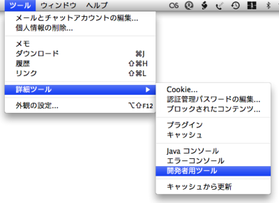図1：Opera Dragonfly クライアントの起動
注：何らかの理由で別のバージョンの Opera Dragonfly クライアントにリバートしたいことがあるかも知れません。Opera 設定ページから、開発者用セクションを見つけ、必ず図2に示すように設定してください。開発者用ツール URL フィールドの URL は Opera Dragonfly クライアントの場所を指しています。ここにクライアントのバージョンを切り替えるにはこのURLを変更します。
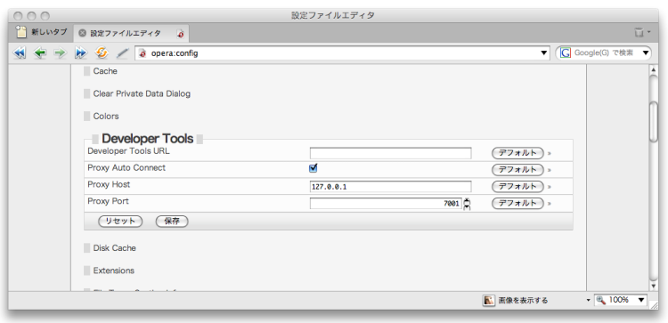図2：opera:config 開発者用ツール設定セクション
設定を更新して保存したら、更新が有効になるように Opera を再起動する必要があります。
ユーザインタフェースの概要
クライアントはデフォルトでは図3のような概観をしています。さあ、探検してみましょう。
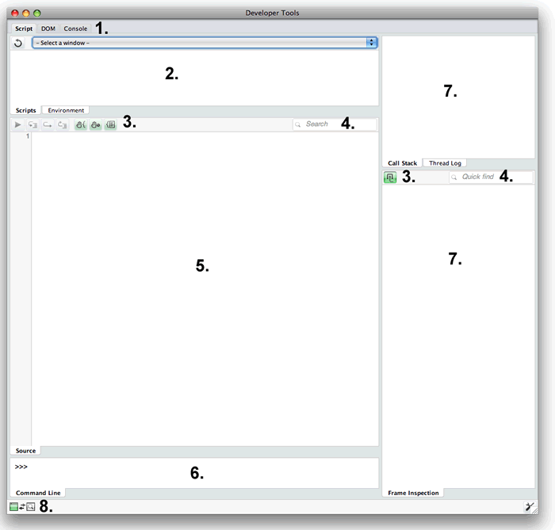図3：デフォルトの Opera Dragonfly UI
それぞれの領域は以下のように対応しています：
- Script 、DOM 、Console タブ：ユーザインタフェースからこれらの主な機能をタブで選択します。Opera ブラウザに読み込まれたウェブサイトを様々な角度から検査することができます。
- サイトインフォメーション・ウインドウ：どのサイトが今 Opera ブラウザに読み込まれているか、そしてどの JavaScript と CSS ファイルがそれらに適用されているか等の情報を表示します。ドロップダウンメニューは現在読み込まれているサイトを表示し、どれか1つを選択すると、その下に選択されたサイトの情報が表示されます。もしくは、Environment タブが選択されていると、ブラウザが実行されているシステムについての情報が表示されます。（図4を参照）
- コンテクスト依存ツール：これらの領域にはスクリプト、DOM 、Console タブのうちどれが選択されているかに依存して、別々のツールが表示されます。各ツールの詳細は後ほど見ていきます。
- 検索ボックス／クイック検索：内部の領域にあるすべての語句を検索できます。
- メインインフォメーション・ウィンドウ：サイトインフォメーション・ウィンドウから選択された別々のスクリプトや CSS 等のファイルのコンテンツを表示します。コンテンツは現在どのメインタブがアクティブかによって異なります。それぞれのコンテンツについては後ほど見ていきます。
- Command Line：JavaScript コマンドを入力して実行することができます。
- インフォメーション・パネル：このパネルはどのメインタブが選択されているかによって変化します。検査しているスクリプト、スタイル等についての情報を表示します。これも後半で見ていきます。
- このインジケータはデバッガとデバッグしているウェブサイトの状態を表示します。

図4：Environment タブは現在実行しているシステムについての詳細を提供します。
Opera Dragonfly の基礎を理解しましたか？さあ、それぞれのコンテクストで何ができるかを見ていきましょう！
基本的なタスクの実行方法
それでは Opera Dragonfly を実行して、好きなウェブサイトをロードしてください。図5のように見えるでしょう。
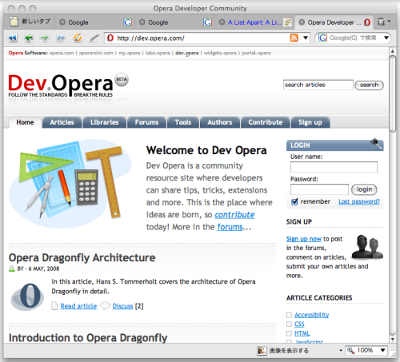図5：Kestrel ベータ2で開いた筆者のお気に入りウェブサイト
開いたサイトは図6のように、 Opera Dragonfly UI のなかのドロップダウンメニューに表示されます。
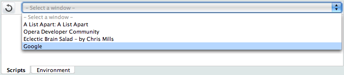図6：Opera Dragonfly サイトインフォメーション・ウィンドウに表示されたウェブサイト
Script タブ
Script タブを選択し、ドロップダウンメニューからどれか１つのサイトを選択してください。サイトインフォメーション・ウィンドウのサイト URL の下にある黒い行をクリックしてください。図7のように画面が更新されます。ここでは同僚の実験サイトを選択していますが、どのようなサイトを選んでもかまいません。
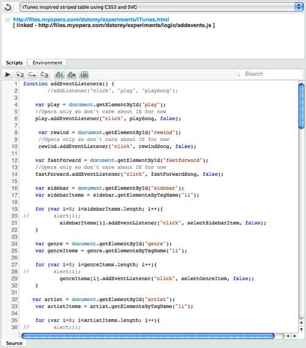図7：Opera Dragonfly で Javascript ファイルを検査します
行番号をクリックしてブレークポイントを設定できます。図8の例を参照してください。
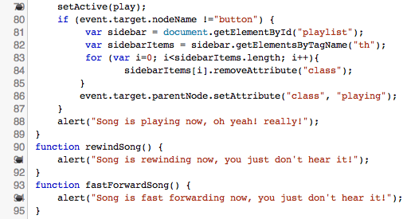図8：JavaScript にブレークポイントを設定します
ブレークポイントを設定した後でスクリプトを実行すると（例えば、ボタンクリックなど、あなたがブレークポイントを設定した部分のスクリプトが実行される操作により）、ブレークポイントでスクリプトが停止し、その時点で環境がどのようになっているか（例えば、各変数がどのような値を持っているか等）分析できます。 図9はボタンをクリックして playSong() を実行させた際の結果です。矢印はコードが停止したブレークポイントを示しています。
図9：矢印はスクリプトの実行が停止したブレークポイントを示している
ウィンドウ下部の HTML DOM パンくずリストは、検査されているアイテムが DOM ツリーのどこに位置しているかを指摘します。これは全てのビューで表示されます。また、このタブの左上に「Reload selected window in the host」というボタンがあります。これは、現在ブラウザで選択されているウェブページを初期状態にリフレッシュするために再度読み込みます。
図10：スクリプトビューのメインボタン・コントロール
メインボタン（図10参照）は左から右の順に以下の機能を提供します：
- Continue (F8)：現在選択されているスクリプトを、ブレークポイントで停止した後、継続実行します
- Step into (F11)：ブレークポイントが含まれている現在の関数の後に、スタック上の次の関数に移動します。
- Step over (F10)：ブレークポイントが設定されている行の次の行に移動します。連続して使うことでスクリプトの実行パスを追跡できます。
- Step out (Shift + F11)： 関数を抜けます。
- Stop at new thread：スクリプトが実行したとき次のスレッドで停止するかどうかを指定します。
- Stop at error：スクリプトが実行したとき次のエラーで停止するかどうかを指定します。
- Log threads：スレッドを Thread パネルでロギングするかどうかを指定します。
Call Stack パネル
コールスタックは特定の関数コールの実行時、現在の環境がどうなっているか（どの関数ががどの順序でコールされたか等）を表示します。例えば、関数AがBをコールし、それがCをコールしたとします。最初にCが、次にB、そしてAの順にリターンします。各関数コールは、たとえば変数値を変えるなど、環境に何らかの変化をもたらします。 図11は最初のブレークポイントまで実行し、その後スタック上の次の関数にステップインしたときコールスタックがどのように見えるかを例示しています。
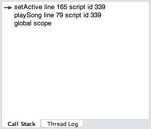図11：Call Stack パネルが様々な関数コール表示しています
ここでスタック中のそれぞれのコールをクリックすると、スクリプトウィンドウの中の識別矢印がそのコールの位置に表示されます。試してみてください!
Thread Log パネル
Thread Log パネルは現在検査しているスクリプトを実行している最中にそれぞれのスレッドの詳細を記録します。ただし、Log threads ボタンを押しておく必要があります（上記参照）。 図12はコードを実行した後のスレッドログウィンドウです。
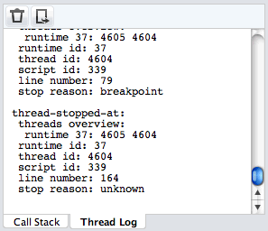図12：実行中の Thread Log パネル
Thread Log パネルには以下の2つのボタンがあります：
- Clear thread log：ログを消去します。
- Export thread log：現在のスレッドログを新しいブラウザウィンドウにテキスト形式で出力します。
Frame Inspection パネル
Frame Inspection パネルは図13に示すように現在のコールスタックの全てのプロパティ値等を表示します。フレームはコールスタックの一部分です。Call Stack パネルからコールを選択して一連のフレームを変更することができます。
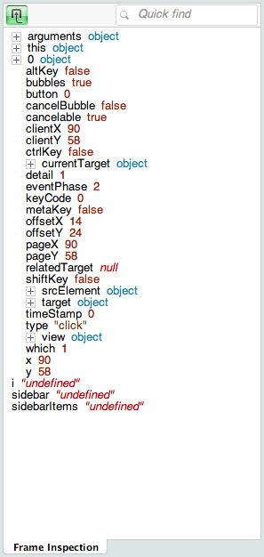図13：Frame Inspection パネル、スタックから選択されたコールの全てのプロパティ値を表示している
Frame Inspection パネルの左上のボタン「Hide default properties in global scope」は多くの場合必要のないデフォルトプロパティを隠します。試してみてください。
コマンドライン
JavaScript コードのテストを行なうために、Command Line パネルから JavaScript コマンドを入力して実行できます。一例として、次のようなシンプルなコマンドを入力してみてください：
var a = 1; var b = 2; var c = a + b;
document.getElementsByTagName('div');
DOM タブ
さて、DOM タブを選択してウェブサイトを選んでみてください。画面は選択されたサイトの DOM を展開可能なビュー形式で表示します。加えて、Styles 、DOM Attributes、 Layout タブが右側に表示されますが、これについては後に触れます（図14を参照）。上のパネルの下にくっついる２列目のタブを Document から Stylesheets に切り替えると、サイトインフォメーション・ウィンドウの画面がそれぞれのウェブページにどの CSS が適用されているのかを表示します。今はタブを Document のままにしておきましょう。
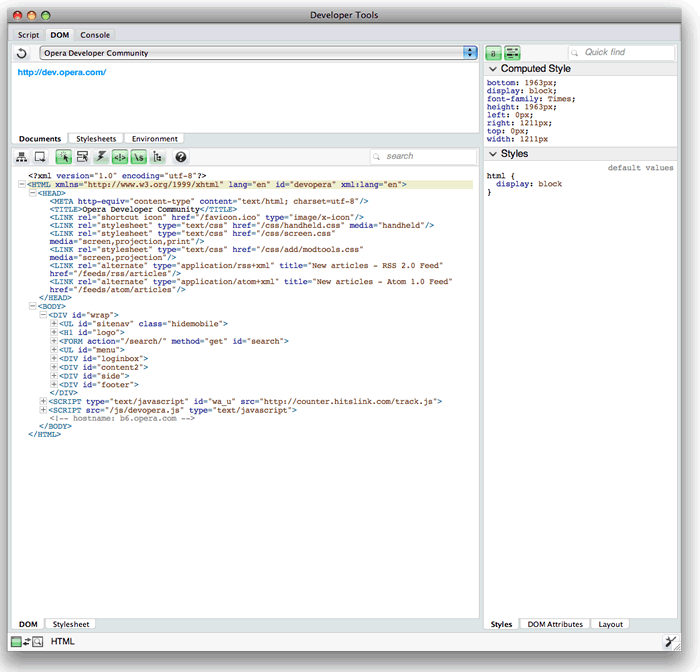図14：Opera Dragonfly でサイトの DOM を検査します
異なる要素を選択すると表示がどう変化するか、しばらく DOM ツリーで遊んでみてください。緑色の強調表示は現在選択されている要素を指定していることに注意してください。
図15：DOM ビューのメインボタン・コントロール
DOMビューのメインボタン (図15参照) は左から右に以下の機能を提供します：
- Expand the DOM tree：ボタンをクリックすると全ての DOM ツリーを展開します。
- Export current DOM view：ボタンをクリックすると閉じられているノードを除く現在の DOM ビューを「Export」という新規タブに表示します。
- Find element by clicking：このボタンが押されていると、ページのどこでもクリックすることで DOM インスペクター上の要素を選択することができます。
- Highlight by mouse hover：このボタンが押されていると、マウスが要素を通過すると、選択要素が DOM インスペクター上で輪郭強調表示されます。
- Update DOM when a node is removed： このボタンが押されているときだけ、JavaScript コマンドが DOM からプログラミング的にノードを削除した際、その結果が反映されます。例えば、このようなコマンド
div.parentNode.removeChild(div);を Opera Dragonfly コマンドラインから実行したときです。 - Show comment nodes：このボタンを押すと HTML と CSS のコメント行が表示されます。
- Show whitespace nodes：このボタンを押すと、空ノードが表示示されます。
- Show DOM in tree view：このボタンを押すと、DOM ツリー階層をより良く把握するために、それぞれのノードがツリーの枝状に表示されます。どのビュースタイルを使うかは個人の好みによります。
- Help： ブラウザで Opera Dragonfly ドキュメントページを開きます。
Stylesheets タブ
さあ、Stylesheets タブをクリックしてみましょう。サイトインフォメーション・ウィンドウにロードされたウェブサイトに関連した各々のスタイルシートの情報を呼び出します。図16に示すように、異なるスタイルシートを選択すると、ビューが変わって Stylesheets タブの下部にスタイルシートのコンテンツを表示します。
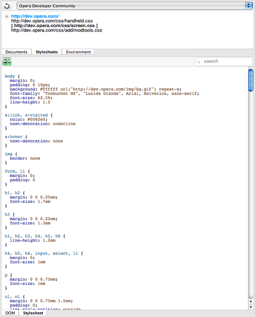図16：Opera Dragonfly でスタイルシートを検査します。
Stylesheets タブの左上に Use shortcuts for properties ボタンがあり、全ての CSS プロパティを展開する一般表示と簡略表示を切り替えることができます。
ここまでで、画面の左側で何が起こっているのか見てきました。右側にも注意を向けてみましょう。
Style タブ
Style タブは図17に示すように、"Computed Style" と "Styles" の2つのセクションから構成されます。
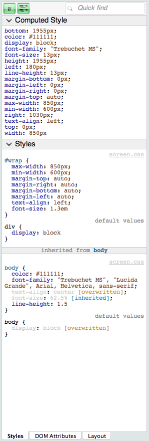図17：Styles タブの2つのセクション：Computed style と Styles
Styles セクションは今選択されている DOM ノードに適用されている全ての CSS を表示し、Computed style セクションは今選択されている DOM ノードに適用されている実際の計算された値を表示します。図17に見られるように、各々のスタイルは当該 DOM ノードに直接適用されているものと、親ノードから継承されているものに分割され効果的に表示されます。
図18に示すように、このタブは左上に2つのボタンを持ちます。これらは左から右に：
- Hide initial values in computed styles：計算の初期値が表示・非表示されます。
- Hide shorthands in computed styles：実際の計算された値の簡略値が表示・非表示されます。
図18：Styles タブのボタン
DOM Attributes タブ
このタブは選択されている要素に対応する DOM オブジェクトの全ての属性を表示します。これらは選択された要素の HTML 属性とは異なることに注意してください。例えばimg 要素を選択すると、図19に示すように src DOM 属性の完全 URL が取得できます。
図19：DOM Attributes タブ
このタブの左上にある Hide empty strings and null values ボタンを押すと、空行とnull値は表示されません。
Layout タブ
図20のように、この便利なタブは現在選択されている DOM ノードのボックスモデルとしてのビジュアル表現、当該ノードと親子ノードの関連を表すパンくずリスト、一連のオフセット値を表示します。
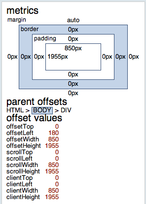図20：Layout タブ
コンソール
最後に Console タブをクリックしてください。図21に示すように、画面が CSS と JavaScript における検証エラーや警告を表示します。
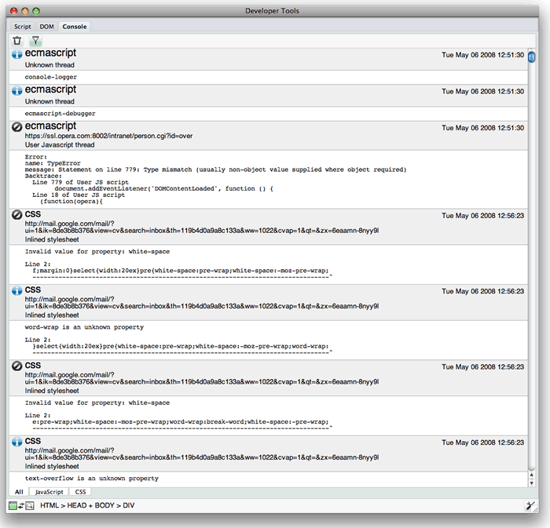図21：コンソールビューは CSS と JavaScript における検証エラーや警告を表示します。

図22：コンソール・ビューのメインボタン
コンソール・ビューのボタン（図22参照）は左から右に以下のように機能します：
- Clear log：Content タブの現在のコンテンツをクリアします。
- Use selected runtime as filter：全ランタイムの代わりに、選択されたランタイムに対応するコンソール出力のみを表示します。
まとめ
本稿ではインストール方法を含む Opera Dragonfly の基礎を掲載し、基本操作のガイドツアーを提供しました。より詳しく知りたい場合は Opera Dragonfly ウェブサイトをご覧ください。質問やご意見があれば、Opera Dragonfly フォーラムに投稿して下さい！
Chris Mills

Chris Mills is a web technologist, open standards evangelist and education agitator, currently working at Opera Software in the developer relations team. He spends most of his time writing articles about web standards for dev.opera.com and other publications (such as .net mag and A List Apart), giving talks at universities and industry conferences, and lobbying universities to improve their web education courses. He believes that education is the answer to everything, but in particular he is passionate about using education to improve the overall content quality, accessibility, usability and future-viability of the Web.
He is the creator of the Opera Web standards curriculum, contributor to the WaSP InterACT project, and coauthor of InterACT with web standards: A Holistic Approach to Web Design. In August 2011, he also accepted the position of co-chair of the newly-formed Web Education Community Group.
Outside work he is a heavy metal drummer, proud father of three and lover of good beer.
This article is licensed under a Creative Commons Attribution, Non Commercial - Share Alike 2.5 license.
Comments
The forum archive of this article is still available on My Opera.
No new comments accepted.